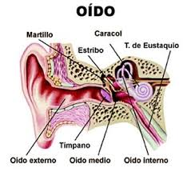

Alumno: Braulio Neftali Sandoval Reyes
Carnet:25-1250-2019
EL Oido
La mejor manera de recordar algo es escuchando
Que seriamos sin este gran sentido
la musica seria simplemente poesia desnuda

Todo lo bueno equilibrado, evitando
con tonalidades altas